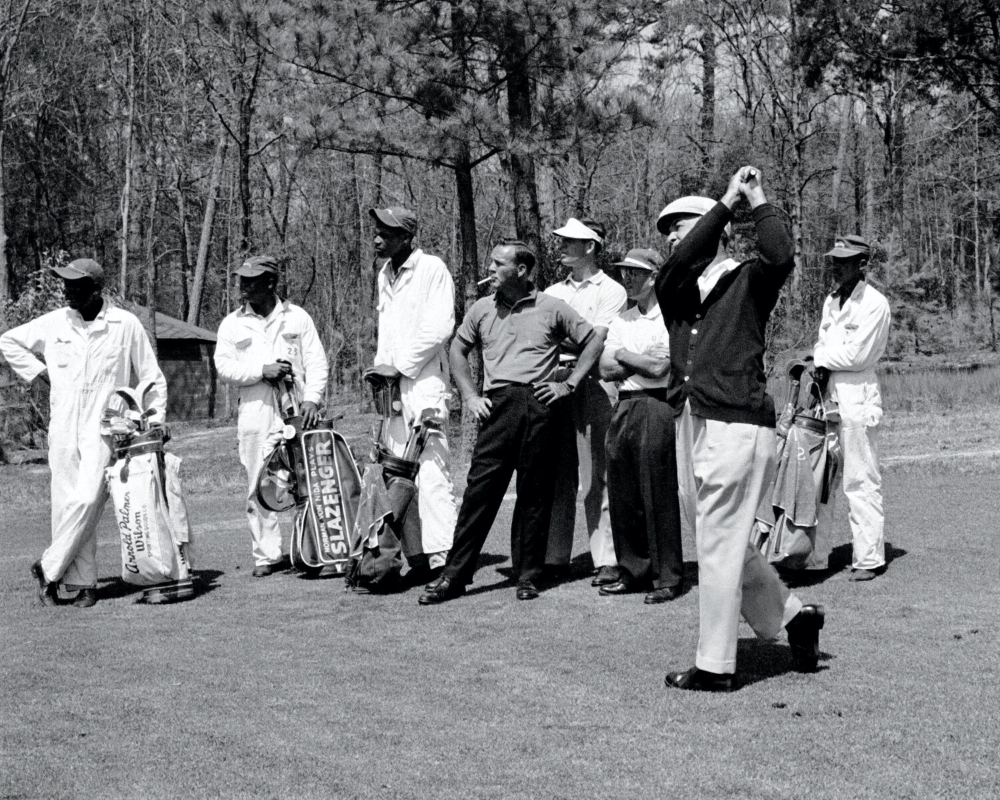

By Latria Graham
Garden & Gun | April/May 2024
In a small cardroom at the back of a municipal golf course clubhouse in Augusta, Georgia, a handful of old men gather and reminisce.
Do you remember when…? How about that time…? What about when Willie Peterson wound up on the cover of Sports Illustrated back in seventy-two? Wasn’t that something?

Source: Garden & Gun
Jim “Big Boy” Dent. Robert “Cigarette” Jones. Tommy “Burnt Biscuits” Bennett. Ike “Stabber” Choice.
As long as ailments don’t keep them confined to the house, they can be found here a couple of days a week, playing bid whist, ribbing one another, and recalling the days when they were part of Augusta National Golf Club’s all-Black caddie corps, which players were required to use during the annual spring Masters Tournament. From the competition’s inception in 1934, the caddies—born of Augusta and attuned to the land—could be a golfer’s secret weapon coming around Amen Corner or for surviving other notoriously tricky holes like No. 4, Flowering Crab Apple, or No. 10, Camellia.
These men were no beasts of burden, but talented prognosticators who turned a racist policy, rooted in subjugation, into a livelihood and a source of esteem—one that, ironically, first added diversity to the game of golf. Men like Willie Peterson, who was on the bag for five of Jack Nicklaus’s six Masters victories. Or Willie “Cemetery” Perteet, President Dwight D. Eisenhower’s personal caddie at Augusta National during the fifties. When the club bent to pressure in 1982 and dropped the ban on outside caddies, the change rocked the corps—many of its members, including those who counted on that crucial tournament paycheck to tide them over till the seasonal club reopened in October, had to look for other work.

Source: Garden & Gun
In the four decades since, recognition for the pivotal part these men played in the game, until recently, scarcely existed. Even today, they aren’t heralded in the Augusta Museum of History, or mentioned in any of the historical milestones or records on the Masters’ website. But as their numbers dwindle—of the seventy-six caddies enlisted in 1982, only twenty or so are still living—they’re at long last beginning to be honored as what many of yesteryear’s golfers always knew them to be: the Pride of Augusta. An elite group of men who changed the game forever.
For thousands of years, the Savannah River’s overflowing waters dumped sand, silt, and detritus onto what would one day become Augusta, leaving fertile soil in their wake. By 1858, three hundred or so particularly arable acres landed in the hands of Louis Mathieu Edouard Berckmans and his son Prosper Jules Alphonse, Belgian immigrants and horticulturists with an interest in fruit and ornamental trees and shrubs. All told, the Berckmans cultivated more than three hundred varieties of peach trees alone and grew a million-plus fruit trees, turning Berckmans Nursery into the first large-scale plant source of its kind in the Southeast. A “horticulture Mecca,” heralded the American Pomological Society, “serving the entire nation.” Folks around Augusta simply called it “Fruitland.”
COME BACK
More than seventy years later, in 1931, the Georgia-born golf champion Bobby Jones and his partner, Clifford Roberts, a Wall Street investment banker, bought the nursery’s spread with plans to fashion a golf course from its landscape. Fruitland Manor became the clubhouse of the new Augusta National Golf Club. Many of the plant varieties the Berckmans developed and improved still grow on Augusta National’s meticulously curated grounds.
Immediately south, sandwiched between the Augusta Country Club and a campus of what is now Augusta University, lies Sand Hills, a Black neighborhood listed on the National Register of Historic Places where most of the caddies grew up. Much of their lives back then took place there “up on the hill,” three miles from downtown as the crow flies, looming hundreds of feet above the then flood-prone city. Close enough to the city’s seats of power that the residents could work in them, even if they could not walk through their front doors. Still, the community felt like “one big family,” recalls Jim Dent, filled with adults who cared about his well-being and corrected his wrongdoings. But “the grandfather of caddies” came from even closer: Fruitland itself.
COME BACK
COME BACK

Source: Garden & Gun
COME BACK
COME BACK